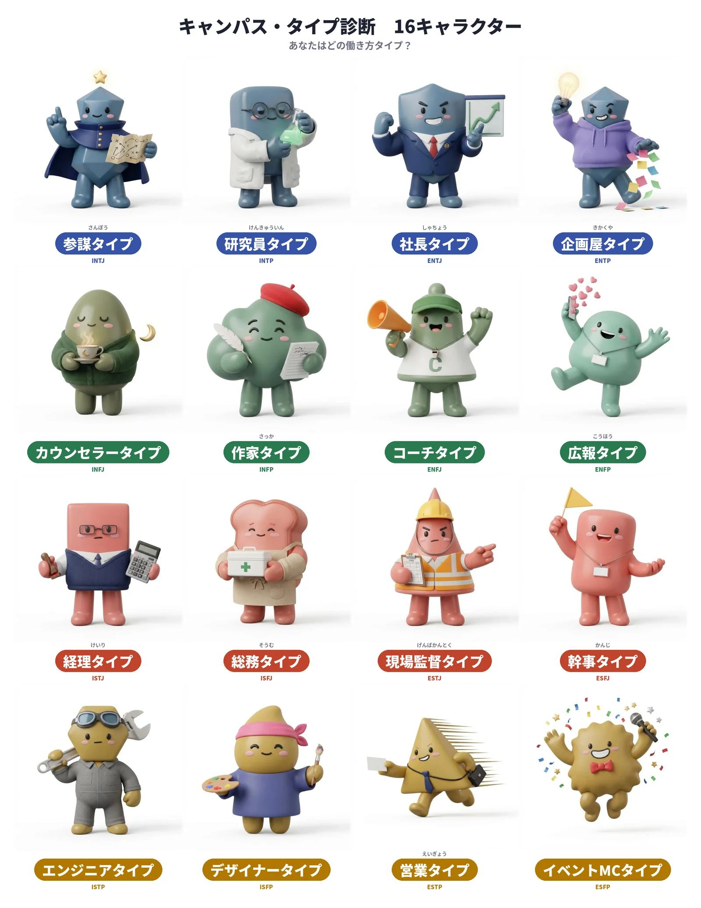

大学生活のあるあるで、
あなたの「働き方」がわかる。
全41問・約10分。ゼミ・バイト・就活の場面から、
4つの軸で16の役割（ロール）に分けます。

4つの分析軸
この診断の特徴
ゼミ・バイト・就活・サークルなど、身近な「あるある」で答えられます。
集合写真・波形・たこ焼き・飛行機の席など、直感で答える問題を入れています。
ユングのタイプ論や、席の位置・刺激への反応に関する研究を手がかりに設問を作りました。
この診断は自己理解のヒントです。能力や適性を判定するものではありません。
16タイプ図鑑
みんなの結果
タイプ別の割合
グループ別の割合
軸ごとの傾向
この診断について
1. 背景と目的
就職活動の自己分析では「自分の強みが言葉にできない」「何から考えればいいかわからない」と悩む大学生が少なくありません。NEXT ROLE 16 は、ゼミ・バイト・就活といった大学生活の身近な場面に答えるだけで、自分の「働き方」の傾向をつかむきっかけをつくることを目的にしています。
結果は「向いている・向いていない」を決めるものではなく、自己PRや職種研究の切り口を見つけるためのヒントとして設計しました。大学と地域の企業が学生の成長を支える、名護市の産学連携・人材育成の取り組みにもつなげられる形を目指しています。
2. デザイン・UIの必然性
なぜ「左＝そう思わない／右＝そう思う」なのか
横書きの文章を読む流れ（左→右）と、「否定→肯定」の順番をそろえることで、迷わず答えられるようにしました。全問で向きを統一しています。
なぜ長文は5段階、A/B比較はスライダーなのか
長い文章を読んだ直後に7段階の細かい区別をするのは負担が大きいため、46字以上の設問は5段階にしています。2つの選択肢を比べる問題は、「どちらにどれくらい近いか」を連続的に表せるスライダーにしました。スライダーは真ん中で軽く止まるようにし、「どちらとも言えない」も選びやすくしています。
左右の並びによる偏りへの対策
A/B形式では「なんとなく左を選ぶ」人がいるため、軸ごとにA側の意味が偏らないよう左右を入れ替えています。7択の問題も、1問おきに選択肢の並びを逆にしています。
なぜキャラクターの形と色を分けたのか
判断の軸は体の形で表しました（思考型＝角ばった形、感情型＝丸い形）。エネルギーの向きはポーズ（外向型＝開いた大きな動き、内向型＝控えめな姿勢）、4つのグループは色（青・緑・赤・黄）で表しています。文字を読まなくても、見た目だけで違いがわかるようにするためです。
設問づくりの手がかりにした研究
- C. G. ユング『心理学的類型』（1921）：外向・内向や、ものの見方・判断の仕方による性格の分類。4つの軸の土台にしています。
- H. J. アイゼンク：外向型と内向型では、外からの刺激に対する反応の大きさが違うという考え方。「波形」の問題のヒントにしました。
- E. T. ホール『かくれた次元』（1966）：人との距離のとり方（プロクセミクス）。「集合写真」や「飛行機の席」の問題のヒントにしました。
- F. L. Strodtbeck & L. H. Hook（1961）：テーブルの端や中心など、座る位置とリーダーシップの関係を調べた研究。
※これらの研究は設問づくりの手がかりとして参考にしたもので、本診断そのものの精度が学術的に検証されているわけではありません。
3. AI活用とチームによる意思決定の記録
プロトタイプ（試作品）づくりにはAIを使いましたが、実際の機械で試し、チームで話し合って、どこを直すかを人の判断で決めました。主な改善点は次のとおりです。
| 項目 | v1（AI初期案） | v2（チーム検証版） | 完成版 | 判断の理由 |
|---|---|---|---|---|
| 回答の進み方 | 選ぶと自動で次へ | 「次へ」ボタンで進む | 「次へ」＋戻って変更可 | 誤タップで先に進んでしまう声が多かった |
| 飛行機の席 | 5秒・簡単な図 | 10秒・実際の機内図 | 10秒・時間切れは中立（0点） | 焦って時間切れになった人が不利にならないように |
| スワイプ問題 | — | 3枚・1枚3秒 | 5枚・1枚5秒・イラスト化・開始前に「集中」案内 | 3秒では文章を読み切れず、3枚だと1枚の影響が大きくてぶれやすかった |
| スライダー | — | 触らないと未回答 | 触った時点で回答・中央で軽く止まる | 「どちらとも言えない」が選べなかった |
| ものの見方（S/N）の設問 | 「現実的」「直感」など直接的な言葉 | 日常場面に言い換え | 具体⇔全体像の問いを追加・左右を入れ替え | 冒険好きかどうかを測ってしまう設問があった |
| 演出 | なし | 効果音・紙吹雪・COMBO | COMBOを廃止・全画面演出は3回だけ・音を小さく | 「うるさすぎる」と感じ、診断に集中しにくかった |
| 見た目 | — | 近未来風（発光・すりガラス） | あたたかい紙もの風に変更 | 「AIっぽい」と感じ、大学生が親しみやすい雰囲気にするため |
| 言葉づかい | シラバス・合意・貢献度など | — | 日常の言葉に言い換え | 初めての人でも読み飛ばさずに答えられるように |
4. クレジット・免責事項
制作：名桜大学「健康情報演習II（PBL）」制作チーム
本診断はユングのタイプ論をもとにしたオリジナルの診断です。既存の商用性格検査やそのタイプ名・イラストとは関係ありません。
この診断は自己理解のヒントです。能力や適性を判定するものではありません。回答内容は個人を特定できる形では保存しません（タイプの集計のみ行います）。